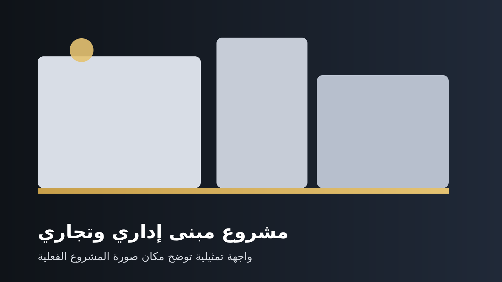
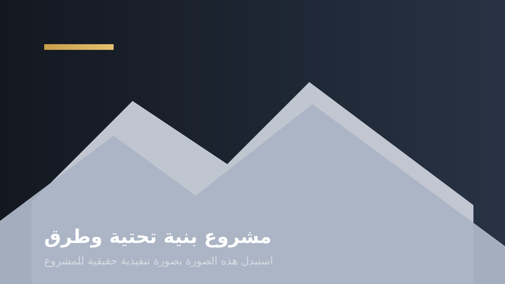
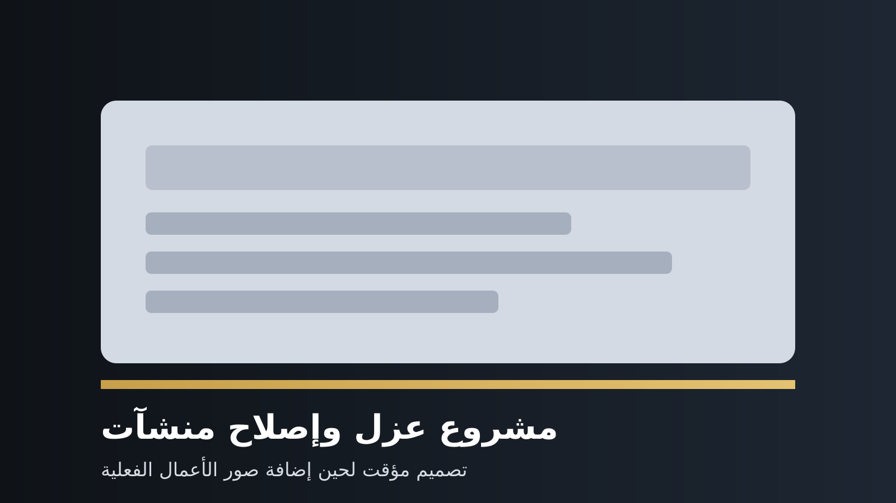
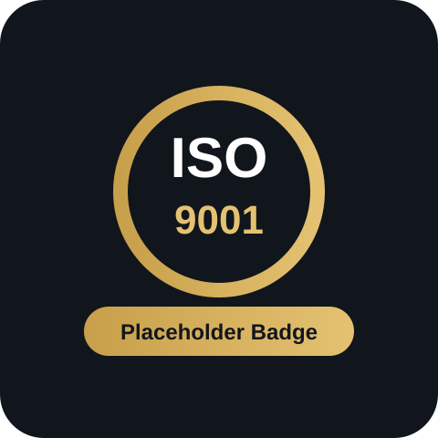
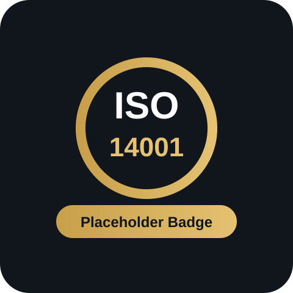
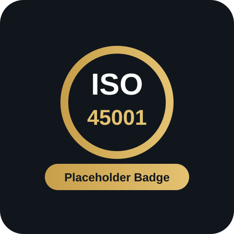

مقاولات معمارية عامة
واجهة شركة تبدو كبيرة، مرتبة، وتعرف كيف تبيع نفسها.
نقدم خدمات المقاولات العامة والهندسة المدنية بأسلوب عمل يركز على دقة التنفيذ، جودة المخرجات، السلامة المهنية، والانضباط في إدارة المشروع من بداية النطاق حتى التسليم النهائي.
جودةسلامةموثوقيةجاهزية ميدانيةالتزام تنفيذي
من نحن
صياغة أقوى من الملف التقليدي
مؤسسة سعيد بن محمد بن سعد القحطاني للمقاولات المعمارية العامة تعمل في مجال المقاولات والهندسة المدنية، مع تركيز على الجودة، السلامة، سرعة الإنجاز، وتقديم نطاق خدمات متكامل يخدم المشاريع من أكثر من زاوية تنفيذية.
أن نكون جهة تنفيذ موثوقة
بمستوى احترافي يعكس الجدية في الإنجاز والانضباط في تسليم الأعمال.
تنفيذ منظم وفق المواصفات
مع إدارة جيدة للنطاق والوقت والجودة والاحتياج الفعلي للمشروع.
جودة، نزاهة، سلامة
واحترام العميل، مع متابعة ميدانية حقيقية لا مجرد كلام تسويقي.
الخدمات
خدمات مرتبة بشكل يرفع قيمة الشركة بصرياً
المقاولات العامة
تنفيذ أعمال المباني والهياكل والطرق والجسور والأعمال المدنية المرتبطة بها.
الخدمات المساحية
رفع طبوغرافي، مسح أراضٍ، خرائط، وخدمات فنية للمشاريع المدنية والميكانيكية.
العزل المائي
حلول عزل للأسطح والتطبيقات المرتبطة بها بخيارات عملية وعمر تشغيلي طويل.
أعمال الخرسانة
صب وتشطيب وقوالب وتسليح وتجهيزات تنفيذ للبنية التحتية والمنشآت المختلفة.
إصلاح المنشآت الخرسانية
معالجة التدهور والعيوب ورفع العمر التشغيلي للمنشآت بنهج وقائي وتصحيحي.
المعدات الثقيلة
تجهيزات ومساندة ميدانية تخدم مواقع التنفيذ وتقلل الاعتماد على أطراف متعددة.
المشاريع
أسماء وصور مشاريع داخل الموقع
أضفت صوراً تمثيلية جذابة وأسماء مشاريع بصياغة مناسبة. استبدل الصور لاحقاً بصور الأعمال الحقيقية، لأن هذه النقطة تفرق فعلاً.

مشروع مبنى إداري وتجاري
تنفيذ أعمال إنشائية ومعمارية لمبنى متعدد الاستخدامات مع متطلبات جودة وتشطيب عالية.

مشروع بنية تحتية وطرق
أعمال تجهيز وتنفيذ مرتبطة بالطرق والمناطق المفتوحة والخدمات المدنية المساندة.

مشروع عزل وإصلاح منشآت
حلول عزل ومعالجة وترميم فني لرفع كفاءة المنشآت وإطالة عمرها التشغيلي.
الاعتمادات
قسم شهادات يعطي انطباع مؤسسة منظمة
أضفت بطاقات ISO بصيغة تصميمية كأماكن جاهزة. لا تعرضها كاعتماد فعلي إلا إذا كانت الشركة حاصلة عليها فعلاً وتضع رقم الشهادة والجهة المانحة.

ISO 9001
نظام إدارة الجودة

ISO 14001
الإدارة البيئية

ISO 45001
السلامة والصحة المهنية
مهم: هذه البطاقات أضفتها كعناصر تصميمية مؤقتة. استبدلها بالشهادات الفعلية فقط إن كانت الشركة معتمدة بها.
لماذا نحن
عناصر ثقة تضخم الصورة الذهنية للشركة بشكل مقنع
هيكل خدمات متكامل
وجود أكثر من خدمة تنفيذية يعطي انطباع شركة أكبر وأكثر جاهزية.
تركيز على الجودة
عرض الجودة بوضوح يرفع الثقة خاصة عند العملاء المؤسسيين.
لغة بصرية قوية
الواجهة النظيفة والمرتبة تبني الانطباع قبل قراءة التفاصيل.
مشاريع وصور واعتمادات
هذا الثلاثي هو أقوى شيء يجعل الموقع يبدو كبيراً وموثوقاً.
تواصل معنا
الموقع الآن أقوى بكثير بصرياً
بقي فقط استبدال البريد والجوال والمدينة وإضافة صور المشاريع الحقيقية والشعار الرسمي. بعدها سيرتفع المستوى من “موقع مرتب” إلى “واجهة شركة محترمة”.